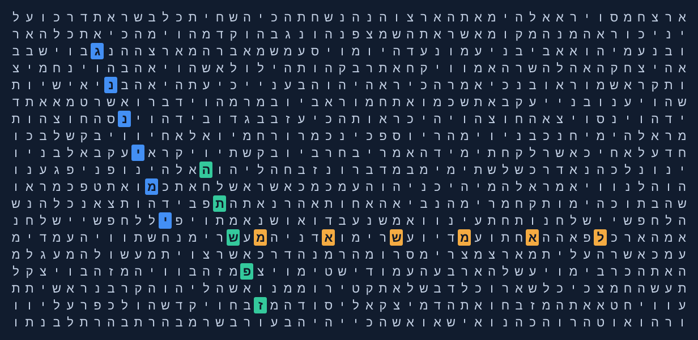
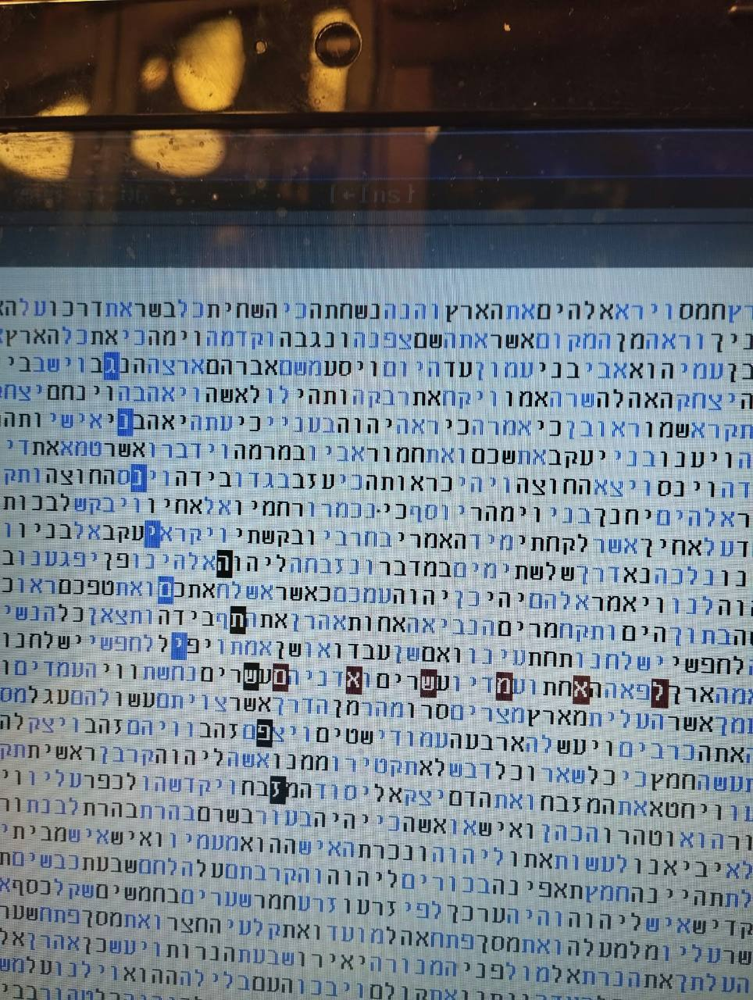
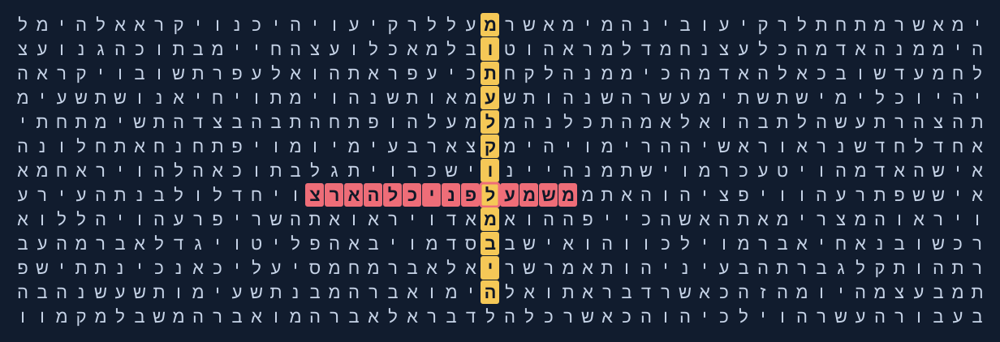
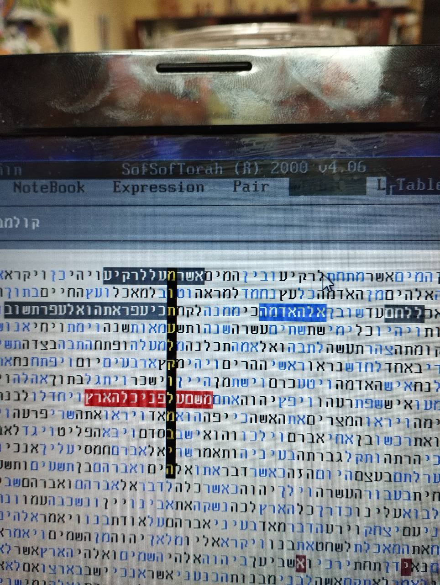
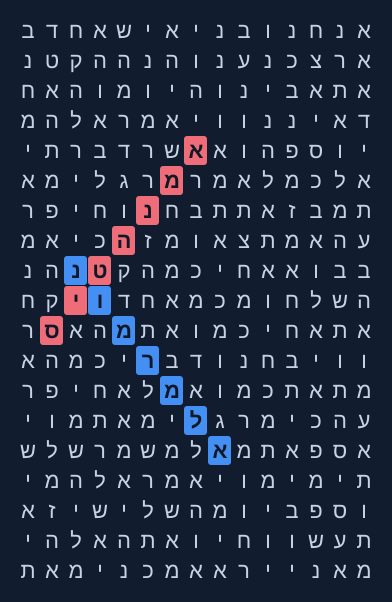

החומר נמסר על ידי איגור פיסיצקי. ייחוס הגילוי: איגור, על פי דבריו.

שחזור מקומי של המטריצה מתוך קורפוס התורה; אינו צילום מהפריוויו.
ימין נ״ג · דילוג -16965
ה׳תשפ״ז · דילוג 16965
מ״א שמאל · דילוג -5
דברי איגור
באותו מקום: מ"א שמאל ( 41 מנדטים לשמאל ). ללא 7 של ליברמן! הם נשארים עם 41 כי ליברמן היום אמר שבשום מקרה הוא לא ישב עם הערבים! . דילוג מינימלי ראשון בכל התורה עבור ביטוי זה!
ימין נ"ג (53) . ( מנדטים). התשפז ( השנה העברית). בדילוג מקביל עבור 2 הביטויים! מדהים!
מצאתי היום בלילה. הבנת שטכניקה לשלב גימטריה בלקסיקון היא מאוד נכונה והיא עובדת. היה לי כבר ניסייון עם זה.
התצלום המקורי שנמסר

מות על קולמביה
החומר נמסר על ידי איגור פיסיצקי. ייחוס הגילוי: איגור, על פי דבריו.

שחזור מקומי של המטריצה מתוך קורפוס התורה; אינו צילום מהפריוויו.
מות על קולמביה · דילוג 1822
דברי איגור
אסון מעבורות החלל קולומביה. משנת 2003. מות על קולמביה . מצאתי את זה רק אחרי האסון! למה לא חיפשתי קודם? אם הייתי רואה את המסר הייתה מיד מרים טלפון לפרופ . ריפס זצ"ל. הוא היה מתקשר להארולד גאנס ( מפצח צפנים ראשי של הסוכנות לביטחון לאומי של ארצות הברית בדימוס). לגאנס היה קשר עם קונדוליזה רייס ( יועצת לבטחון לאומי של נשיא בוש הבן. ). משם הדרך ל NASA קצרה. 4 טלפונים! אולי עוד באותו יום עוד שהם היו בחלל היה ניתן לנסות משהו? אני אוכל את עצמי עד היום. 16 ימים הם היו בחלל ואני כל הזמן רציתי לבדוק ופשווט הייתה עסוק בעבודה בלימודים בקשר רומנטי ..... לא היה לי אז מחשב נייד. רק נייח. לא הצלחתי.... למה ? למה?
התצלום המקורי שנמסר

אל״מ רמון · אמן הטיס
החומר נמסר על ידי איגור פיסיצקי. לפי איגור: ממצא של פרופ׳ אליהו ריפס ז״ל.

שחזור מקומי של המטריצה מתוך קורפוס התורה; אינו צילום מהפריוויו.
אל״מ רמון · דילוג -14
אמן הטיס · דילוג 16
דברי איגור
אל"מ רמון. אמן הטיס בכתיב חסר. הביטוי אמן הטיס בדילוג 16רמז אדיר : רמון היה מפקד טייסת f16, מסימה בחלל הייתה 16 יום.. קולומביה עשתה. 16 הקפות ביממה סביב כדור הארץ. הם עבדו 16 שעות ביממה. הנחיתה הייתה אמורה להתבצע ב 16.16 זמן מקומי.
ממצא של פרופ' אליהו ריפס זצ"ל
הנוסח המקורי באנגלית
Colonel Ramon. (Israeli astronaut tragically died on Columbia disaster). Master of pilotage! Scip 16 is not by chance! He was a chief officer commander of F16 escadrille . The space mission was for 16 days. Columbia space shuttle make 16 circles around Earth each day. The work 16 hours each day. They must landing exactly on 16.16 local time.